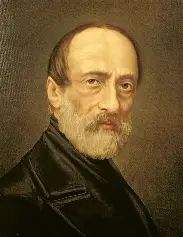
Una república
Defendida por Giuseppe Mazzini y Giuseppe Garibaldi.
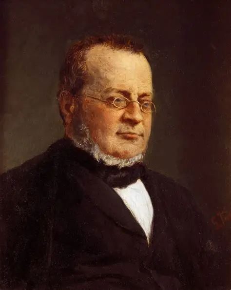
1861
Nace el Reino de Italia
Dos países que nacieron en el mismo siglo, contra el mismo rival y por caminos muy parecidos.
Empezar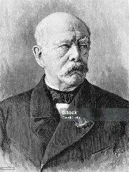
1871
Nace el Imperio alemán
En el siglo XIX, los estados italianos y los estados alemanes se unieron, cada grupo, en un solo país. Los dos procesos se parecen tanto que conviene estudiarlos lado a lado.
Toca cada fila para descubrir la respuesta.
Parte 1
Con las revoluciones liberales de 1830 y 1848. En ellas, los italianos sintieron que debían resistir juntos contra Austria y que pertenecían a un mismo territorio.
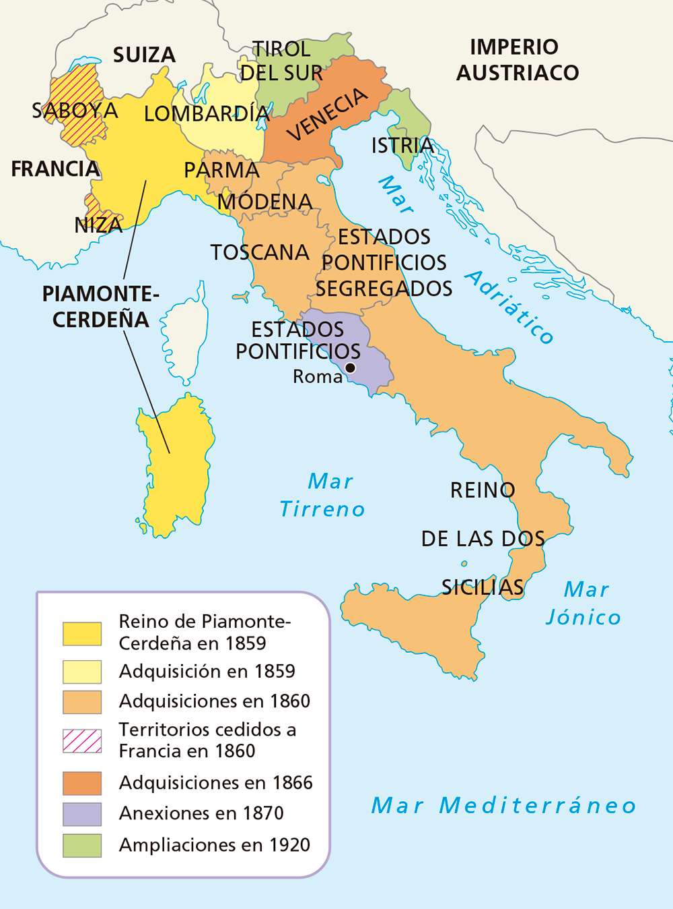
Pregunta al público: ¿cuál de estos modelos creen que ganó?

Defendida por Giuseppe Mazzini y Giuseppe Garibaldi.
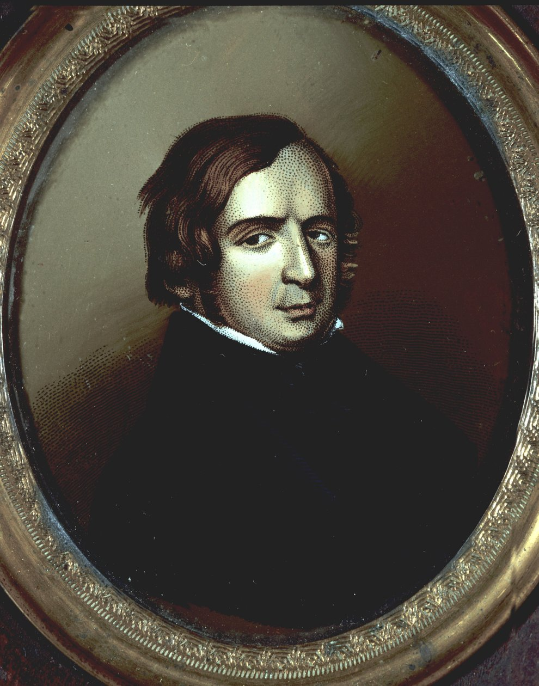
Vincenzo Gioberti quería una unión de Estados que conservaran su propio gobierno.
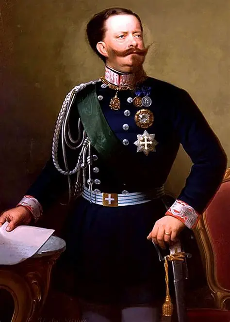
El conde de Cavour proponía unir Italia alrededor del reino de Piamonte-Cerdeña y su rey, Víctor Manuel II.
Ganó el proyecto de Cavour: Italia nació como una monarquía constitucional dirigida por la casa de Saboya.
Avanza etapa por etapa mientras explicas.
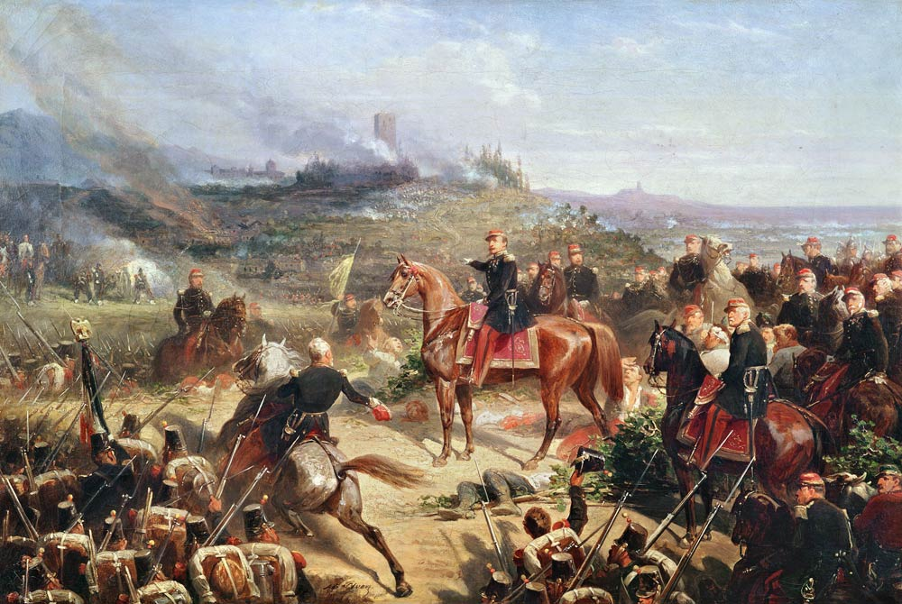
Con la ayuda de Napoleón III (Francia), el Piamonte derrotó a los austriacos en las batallas de Magenta y Solferino.
Después, Cavour organizó plebiscitos (votaciones del pueblo) para que Parma, Módena y Toscana se unieran al Piamonte.
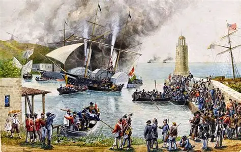
En 1860, una expedición dirigida por Garibaldi conquistó el reino de Nápoles-Dos Sicilias y se lo entregó al Piamonte.
En 1861 se reunió el primer Parlamento nacional italiano en Turín, que proclamó a Víctor Manuel II rey de Italia.
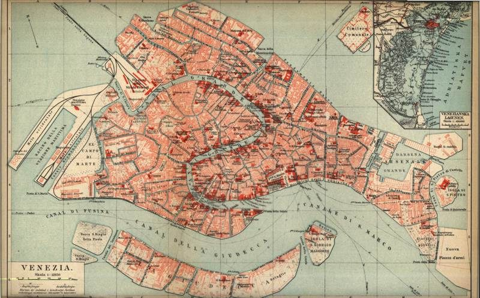
El Véneto pasó a Italia porque Austria perdió la guerra contra Prusia en 1866.
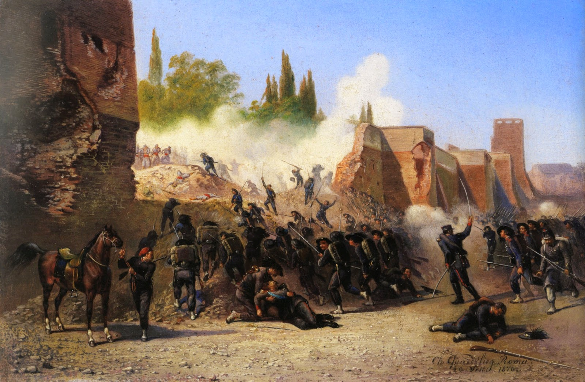
Napoleón III protegía al papa, y eso impedía tomar los Estados Pontificios. Cuando Francia fue derrotada por Prusia (1870–1871), las tropas italianas ocuparon la región.
Roma fue proclamada capital de Italia.
Parte 2
A mediados del siglo XIX, Alemania estaba formada por 39 estados reunidos en la Confederación Germánica. Los dos más fuertes, Austria y Prusia, competían por controlarla.
Los alemanes se sentían una nación porque compartían lengua y cultura. Además, la burguesía creó en 1834 el Zollverein: una unión aduanera alrededor de Prusia que eliminaba impuestos al comercio entre estados.
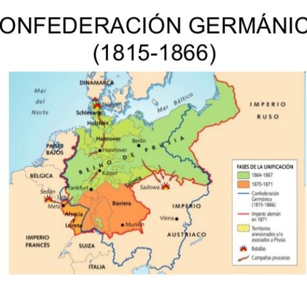
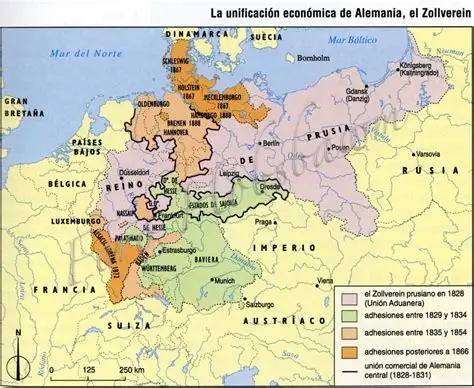
Pregunta al público: ¿cuál se impuso?
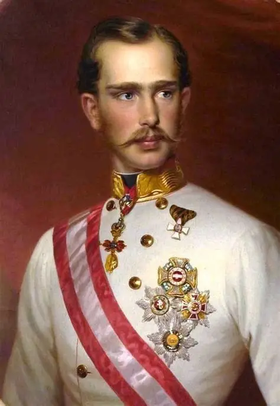
Todos los estados alemanes con Austria, y liderados por ella.
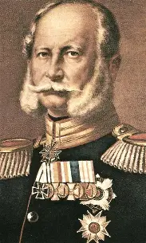
Los estados alemanes liderados por Prusia y sin Austria.
Ganó la Pequeña Alemania, gracias al canciller Otto von Bismarck y al rey Guillermo I de Prusia.
Problema 1: Austria tenía demasiada influencia sobre los estados alemanes.
Problema 2: los estados católicos del sur no querían ser dirigidos por una Prusia luterana.
Su solución: tres guerras, una tras otra.
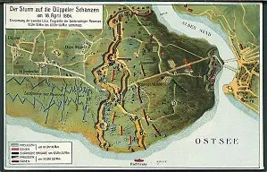
Schleswig y Holstein tenían población alemana, pero estaban bajo autoridad de Dinamarca. Prusia y Austria se aliaron y derrotaron a los daneses.
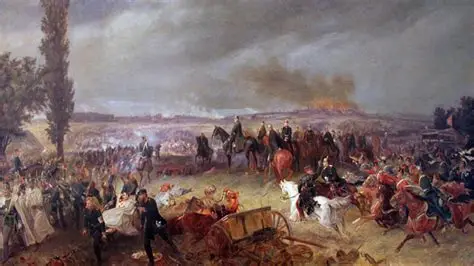
Prusia venció en Sadowa. Austria quedó fuera del proceso de unificación.
Se fundó la Confederación Alemana del Norte, dirigida por Prusia.
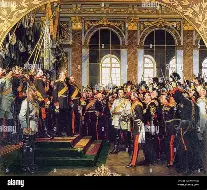
Tras la victoria prusiana en Sedán, cayó el Segundo Imperio francés de Napoleón III.
Guillermo I fue proclamado emperador (Káiser) del Segundo Reich alemán. Con el Tratado de Fráncfort (1871), Francia cedió Alsacia y Lorena.
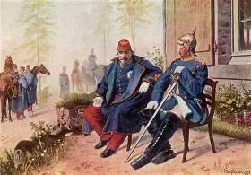
Si ponemos las dos unificaciones en una misma línea de tiempo, aparece algo sorprendente: las victorias de Prusia terminaron de unificar Italia.
Revoluciones liberales: nace el deseo de unirse contra Austria.
Se crea el Zollverein, la unión aduanera alrededor de Prusia.
Nuevas revoluciones liberales y proyectos de unificación.
Fracasa el Parlamento de Fráncfort: Gran o Pequeña Alemania.
Magenta y Solferino: Lombardía se une al Piamonte.
Garibaldi conquista Nápoles-Dos Sicilias.
Víctor Manuel II, rey de Italia. Parlamento en Turín.
Guerra de los Ducados contra Dinamarca.
Prusia vence a Austria en Sadowa, y por eso Italia recibe el Véneto.
Prusia vence a Francia en Sedán. Napoleón III ya no protege al papa e Italia ocupa Roma.
Guillermo I, Káiser del Segundo Reich. Tratado de Fráncfort: Alsacia y Lorena.
Roma, capital de Italia.
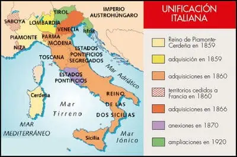
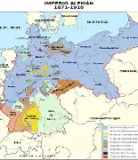
Ocho preguntas para comprobar lo aprendido. Ideal para cerrar la exposición con el público.